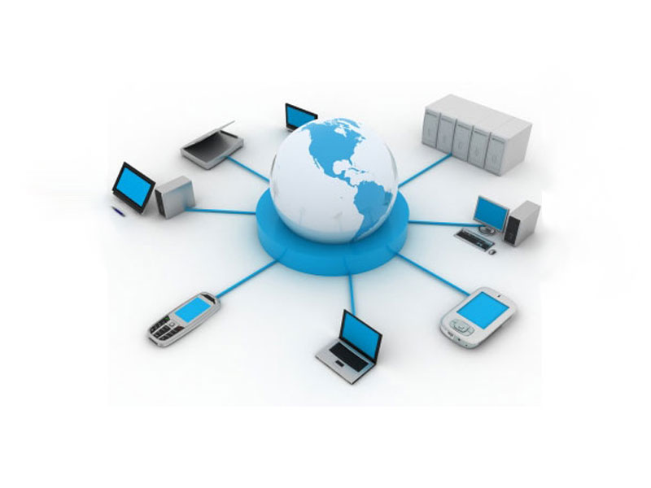
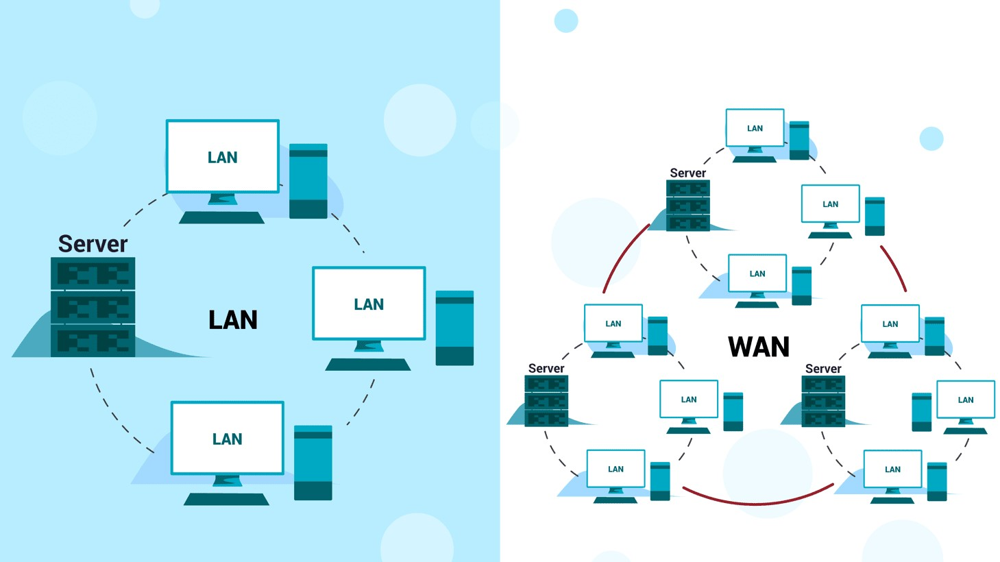

Vai all'indice
Vai al capitolo 5
Naviga all'interno del CAPITOLO 6...
Tecnologia Nemica
Cosa posso fare per difendermi
Legge sulla Privacy
Informatica amica
Tecnologia nemica
Il mio tempo di utilizzo del cellulare e della rete è riassunto dall'immagine qui in basso

Personal Area Network (PAN)
Una rete personale, in sigla PAN (in inglese Personal Area Network), è una rete informatica utilizzata per permettere la comunicazione tra diversi dispositivi (telefono, PC, tablet ecc.) vicini a un singolo utente. I singoli dispositivi possono anche non appartenere all'utente in questione. Il raggio di azione di una PAN è tipicamente di alcuni metri.
Local Area Network (LAN)
Una Local Area Network (LAN) è un insieme di dispositivi collegati insieme in un luogo fisico (edificio pubblico o privato, ufficio, casa). Una LAN può essere piccola o grande, da una rete domestica con un utente a una rete aziendale con migliaia di utenti e dispositivi.
Wide Area Network (WAN)
Una rete geografica o Wide Area Network (WAN) è una rete di telecomunicazioni che si estende su una grande distanza geografica per lo scopo principale della rete di computer. Per definizione, la WAN è una rete che attraversa regioni o Paesi.

Global Area Network (GAN)
Le reti GAN (Global Area Network) sono reti che collegano computer dislocati in tutti i continenti. Diverse sono le tecnologie impiegate per interconnettere le macchine: dal cavo in rame del comune doppino telefonico agli avanzati sistemi satellitari. Internet, la rete delle reti, è un tipico esempio di rete di tipo GAN. Grazie alle reti possiamo condividere le risorse all’interno di un gruppo di lavoro, come ottenere informazioni da archivi in comune, scambiare informazioni per posta elettronica, lavorare insieme su uno stesso documento.
Architettura e funzionamento della rete Internet e i suoi servizi
La rete Internet è paragonabile ad una grande ragnatela formata da risorse collegate tra loro mediante link (collegamenti ipertestuali), che formano ciò che si potrebbe definire un ipertesto di dimensioni potenzialmente infinite.
Il Server è un computer che fornisce informazioni e/o risorse ad utenti di una rete che si collegano tramite il proprio computer (Client). Il Server del computer non può sempre fornire la richiesta al Client, oppure può rallentare la richiesta se ci sono molti Client, introducendo così un aumento del ritardo al tempo di risposta del sistema.
I servizi offerti dalla rete Internet sono molti; tra questi c’è la posta elettronica, l’FTP (File Transfer Protocol che ci permette il trasferimento di file tra due HOST collegati alla rete), i newsgroup, la chat, Facebook, Telnet.